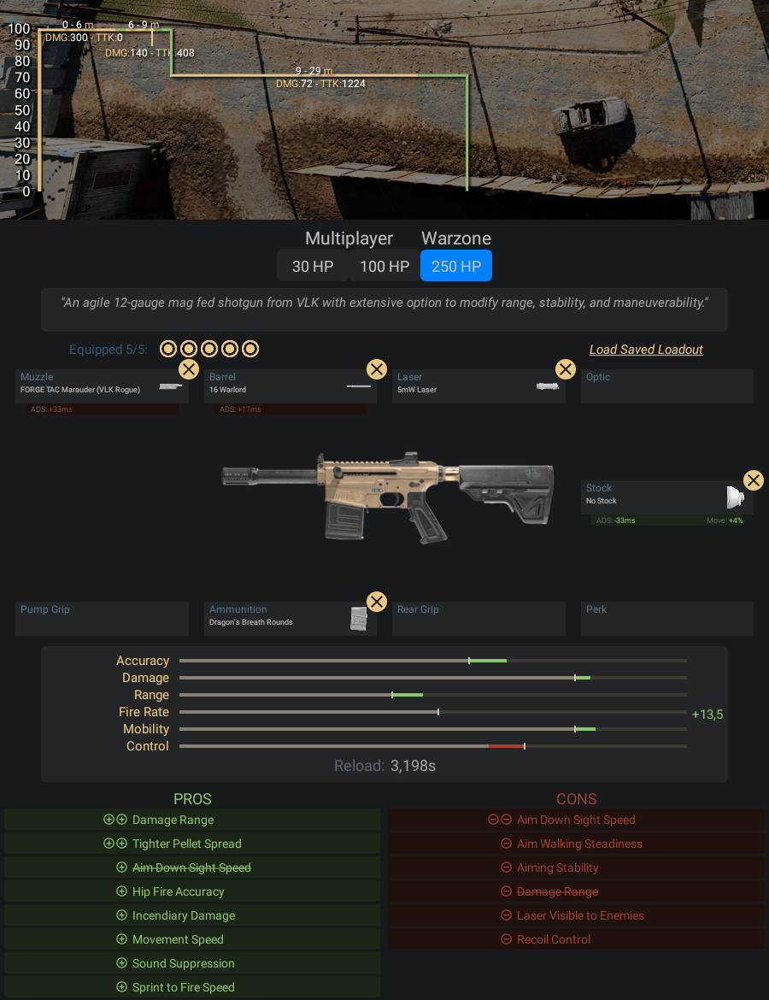

Uma escopeta calibre 12 da VLK alimentada por carregador com muitas opções de
modificação de alcance, estabilidade e mobilidade
- Pontos Positivos:
- -Até os 6 metros essa arma da 300 de dano, então você precisa
- dar só um tiro em seu inimigo que ele já cai fedendo
- -Tem uma mobilidade altíssima, parece que você está numa Fórmula 1
- jogando com ela
- Pontos Negativos:
- -A partir dos 9 metros essa arma deixa de ser tão letal (
ainda bem), por isso ela só vai ser útil - em distâncias muito curtas
Informações e dicas de como fazer uma classe da VLK Rogue:
Acessórios para VLK Rogue:
- Boca - Saqueador FORGE TAC
- Cano - 16 Warlord
- Laser - Laser de 5Mw
- Coronha - Sem Coronha
- Munição - Balas Bafo de Dragão